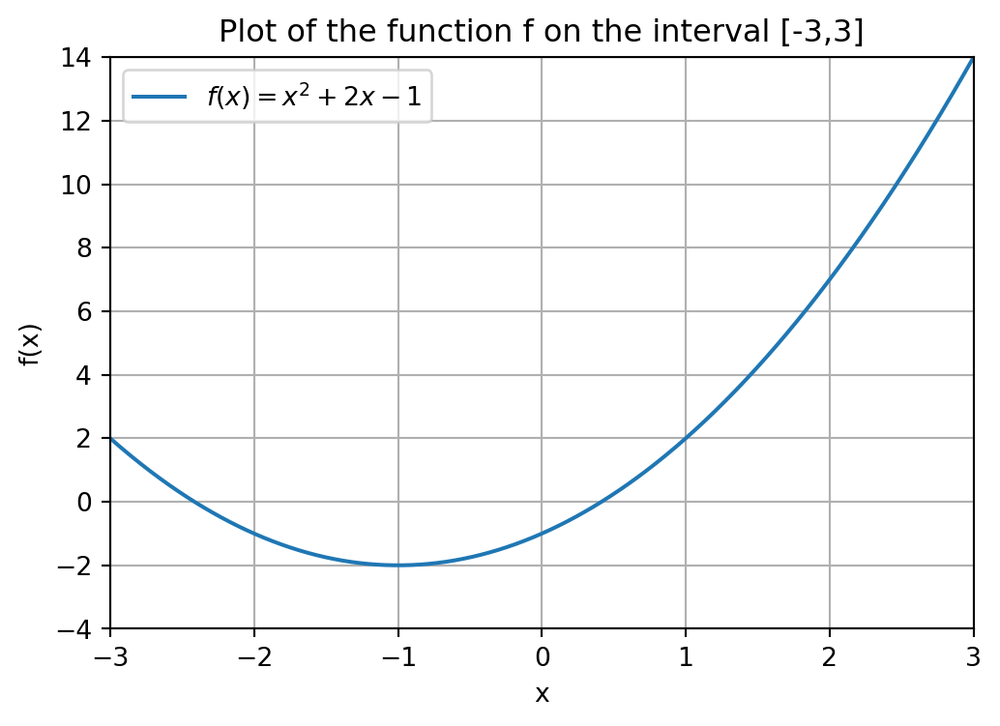

In this chapter we will see some mathematical algorithms from the scipy package (or module) as well as how to visualizing data, e.g., some of the figures we have seen in earlier chapters, using matplotlib. SciPy is a package that can be used to perform various mathematical task and algorithms, making it very important for data anlaysis purposes. The Matplotlib package is essential in Python to create insightful visual representations of your data and the analysis you performed on it.
We first discuss two fundamental mathematical tasks: finding a root of a mathematical function and minimizing a mathematical function. After that, we will explain how to visualize data and mathematical functions.
8.1 Root finding
Consider the function f(x) = x^2 + 2x - 1. A visualization of this function is given below. We will learn how to create this figure ourselves in ?sec-visualization.
Show code generating the plot below
import numpy as npimport matplotlib.pyplot as plt# Define the x rangex = np.linspace(-3, 3, 600)# Define the function fdef f(x):return x**2+2*x -1# Create the plotplt.figure(figsize=(6, 4))plt.plot(x, f(x), label='$f(x) = x^2 + 2x - 1$')# Add labels and titleplt.title('Plot of the function f on the interval [-3,3]')plt.xlabel('x')plt.ylabel('f(x)')# Add a gridplt.grid(True)# Set rangeplt.xlim(-3,3)plt.ylim(-4,14)# Add a legendplt.legend()# Show the plotplt.show()
A common task is to find a root x of a mathematical function f : \mathbb{R} \rightarrow \mathbb{R}. A root is a point that satisfies the equation f(x) = 0.
In our case, we want to solve the equation x^2 + 2x -1 = 0. You might remember from your high school math course that, for given numbers a, b and c, the roots of the quadratic function f(x) = ax^2 + bx + c, are given by
x_\ell = \frac{- b - \sqrt{b^2 - 4ac}}{2a} \ \ \text{ and } \ \ x_r = \frac{- b + \sqrt{b^2 - 4ac}}{2a}
where the subscript \ell is used to denote the fact that this will be the “left” root and r to denote the “right” root. In fact, in one of the tutorials you will be asked to implement these formulas in a Python function.
For f(x) = x^2 + 2x-1, we have a = 1, b = 2 and c = -1. Plugging in these values in the formula above gives x_\ell = -1 - \sqrt{2} \approx - 2.4142 and x_r = -1 + \sqrt{2} \approx 0.4142. Although this is an easy way to find the roots of a quadratic function, we want to be able to find roots of any function f, assuming they exist.
The easiest way to find a root of a general function is to use the the function fsolve from the (sub)package scipy.optimize. This package contains many functions to perform mathematical tasks. In order not having to write scipy.optimize the whole time we will import this package under the name optimize, just as we did with NumPy where we used the line import numpy as np. Below is the code snippet that carries out the root finding procedure.
import scipy.optimize as optimizedef f(x):return x**2+2*x -1guess =3f_zero = optimize.fsolve(f,guess) print("A root of the function f is given by", f_zero)
A root of the function f is given by [0.41421356]
In chronological order, this code does the following:
Import the optimize (sub)module from the scipy package.
Define f(x) = x^2 + 2x -1 as a Python function (Chapter 6).
Use optimize.fsolve(f,guess) so that Python knows that we want to use the function fsolve() from optimize.
The argument that is returned by fsolve() is assigned to the variable f_zero.
Print a message containing the root of f that was found.
We could also have used optimize.fsolve(f,3) instead of separately defining guess = 3 and then using guess as input argument. However, when coding, it is common practice to always define input data (the number 3 in this case) in a separate variable. Especially if the number would be used in multiple places in your code, this is useful.
The use of fsolve() requires some additional explanation. It takes two input arguments, the first one being a (mathematical) function f and the second one an initial guess for where a root of f might be, which we store in the variable guess. Note that you cannot reverse the order of the input arguments: f_zero = optimize.fsolve(guess,f) does not work!
It is important to observe that a Python function can itself be an input argument of another Python function! That is, the function f is an input argument of the function fsolve(). We also note that it is required to define the f as a Python function. That is, it is not possible to use the command optimize.fsolve(x**2 + 2*x - 1,guess).
The second input argument guess is needed by fsolve to execute the underlying mathematical root finding method that is used to find a root of f. We do not go into the actual mathematical method that is being carried out in the background by Python when we execute fsolve1, but the idea is that the method starts at the guess that we provide and then gradually finds its way to a root of f by doing various calculations.
In fact, the choice of initial guess can influence the outcome of fsolve. That is, a different initial guess can lead the underlying mathematical method to a different root of the function. This is illustrated in the code below, where we find the other root -2.4142....
guess =-2f_zero = optimize.fsolve(f,guess)print("A root of the function f is given by", f_zero)
A root of the function f is given by [-2.41421356]
We can also use root finding to solve other types of equations. Suppose we want to compute an x such that
f(x) = 6.
Moving the 6 to the left, we see that this is the same as computing an x such that f(x) - 6 = 0. Therefore, if we define the function g(x) = f(x) - 6, then an x that satisfies g(x) = 0 also satisfies f(x) = 6, and vice versa. Let us code this as well.
def g(x):return f(x) -6guess =4f_zero = optimize.fsolve(g,guess)print("A number x satisfying f(x) = 6, is given by", f_zero)
A number x satisfying f(x) = 6, is given by [1.82842712]
The function g, taking as input a number x, works as follows: It computes f(x) by running the function f with the input x, and then substracting 6 from it. Note that we could have also defined g by returning x**2 + 2x - 1 - 6. It is, however, more convenient to just write f(x) - 6 here, because we have already defined the function f earlier. Also, if we would change the definition of the function f, the function g is automatically updated as well.
Everything we have seen up till now also allows us to write a general Python function to solve an equation of the form
f(x) = c
for a given function f and number c. In the example above, we had c = 6.
def solve_eq(f,c,guess):""" Input ---------- f : A mathematical function taking as input a variable x, c : The right hand side value of the equation f(x) = c, guess : The initial guess for fsolve(). Returns ------- A value x solving f(x) = c. """def g(x):return f(x) - c x = optimize.fsolve(g,guess)return x
The function above takes as input the function f, the number c and an initial guess that fsolve() can use. Let us try out solve_eq() on some input data. The goal will be to find a solution to the equation
3x^2 -4x + 1 = 5.
#We create the function h(x) = 3x^2 - 4x + 1 def h(x):return3*x**2-4*x +1#Right hand side of the equation h(x) = 5d =5#Our initial guess for fsolve() (we choose 1 here).initial_guess =1print("A solution x to h(x) = d is given by", solve_eq(h,d,guess))
A solution x to h(x) = d is given by [2.]
Note that the input arguments h, d and initial_guess need not have the same names as the local variables f, cguess in the function solve_eq(). What is important is that we input the arguments in the correct order in which we want them to be identified with the local variables. That is, by doing solve_eq(h,d,guess) Python knows that we want to assign the first input argument h to the first local variable f, the second input argument d to the second local variable c, and the third input argument initial_guess to the local variable guess.
8.2 Minimization
Another fundamental task in mathematics is to find the minimum value that a function can attain. Recall the function f(x) = x^2+2x-1 from the previous section.
Show code generating the plot below
import numpy as npimport matplotlib.pyplot as plt# Define the x rangex = np.linspace(-3, 3, 600)# Define the absolute value functiondef f(x):return x**2+2*x -1# Create the plotplt.figure(figsize=(6, 4))plt.plot(x, f(x), label='$f(x) = x^2 + 2x - 1$')# Add labels and titleplt.title('Plot of the function f on the interval [-3,3]')plt.xlabel('x')plt.ylabel('f(x)')# Add a gridplt.grid(True)# Set rangeplt.xlim(-3,3)plt.ylim(-4,14)# Add a legendplt.legend()# Show the plotplt.show()

It can be seen that the point x at which the function f is the lowest, i.e., attains its minimum is x = -1, and the function values in that point is f(-1) = -2. Python has various ways of finding the minimum of a function, the easiest-to-use being fmin() from the optimize module.
The syntax that is used for this function is similar to that of fsolve(). Although we already defined the function f in the previous section, we will redefine it in the code below for sake of completeness.
def f(x):return x**2+2*x -1guess =1minimum = optimize.fmin(f,guess)print('The minimum of the function f is attained at x = ', minimum)
Optimization terminated successfully.
Current function value: -2.000000
Iterations: 19
Function evaluations: 38
The minimum of the function f is attained at x = [-1.]
Note that Python outputs some information in the console about the mathematical optimization procedure that was performed in order to find the minimum of the function. It displays the function value at the miminum that was found, in our case -2 = f(-1), and a number of iterations and function evaluations. These last two pieces of information are not relevant for us, but are useful for an expert who wants to understand better how well the optimization procedure performed. If you want, you can suppress all this information by adding disp=False or disp=0 as an argument to the fmin() function. This is illustrated below.
minimum = optimize.fmin(f,guess,disp=False)print('The minimum of the function f is attained at x = ', minimum)
The minimum of the function f is attained at x = [-1.]
In fact, there exist many root finding methods. A very famous one is Newton’s method developed by Isaac Newton, a famous sciencist that you might have heard of. The reason why there are so many root finding methods is that some work better than others on a given function f. There are other ways to do root finding in Python that allow you to specify a root finding method yourself, but this is a more advanced topic beyond the scope of this course.↩︎